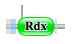
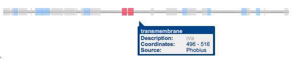

3. Les protéines impliqués dans la fusion
--> 1ère fusion : entre les gènes ARHGEF1 et UCKL1
Cette première fusion implique deux protéines solubles.
Protéine codée par ARHGEF1 :
- Fonctions
La première protéine impliquée est celle codée par le gène A (ARHGEF1), il s’agit de la Rho Guanine nucleotide Exchange Factor (GEF). Elle semble jouer un rôle dans la régulation de la GTPase RhoA. Cette GTPase a un rôle fondamental dans de nombreux processus cellulaires initiés par des stimuli extracellulaires transmis grâce aux récepteurs couplés à une protéine G. La Rho GTPase doit donc former un complexe avec cette protéine G et engendrer un signal dit «rho dépendant». Elle a pour rôle de catalyser l’hydrolyse de la guanosine triphosphate (GTP) qui donnera la guanosine diphosphate (GDP).
Notre protéine codée par ce gène A, la «GEF», régule la Rho GTPase par les sous-unités alpha-12 et alpha-13 se liant à la guanine.
Elle agit en temps que protéine activant ces deux sous-unités de la GTPase (notre protéine peut donc aussi être appelée GAP) : elle favorise dans ce cas l’hydrolyse du GTP. Elle agit également en tant que facteur d’échange de nucléotides guanine (GEF) : elle favorise dans ce cas la substitution du GDP en GTP. Lorsque la sous-unité alpha 13 activée est liée à RhoGEF, l’activité de celle-ci semble stimulée par interaction avec un domaine de type RGS (Regulator of G-protein signaling), en revanche l’activité de RhoGEF est inhibée par liaison à la sous-unité alpha 12 activée de la Rho GTPase.
- Séquence (format FASTA) http://www.uniprot.org/uniprot/Q92888.fasta
- Domaines Pfam de la protéine ARHG1_Human – Q92888
Domaine RGS like : domaine régulateur du domaine de signalisation de la protéine G (de l’acide aminé 42 à l’acide aminé 232)
Domaine RhoGEF : domaine structural du facteur d’échange du nucléotide guanine (GEF) pour les GTPases de type Rho/Rac/Cdc42 (de l’acide aminé 420 à l’acide aminé 403)
Il s’agit donc d’une protéine soluble.
Protéine codée par UCKL1 :
- Fonctions
Cette protéine est ubiquitaire : elle est exprimée dans tous les tissus à l’état normal.
La protéine codée par ce gène est appelée Uridine-Cytidine Kinase Like 1, il s’agit d’une uridine kinase, elle catalyse donc la phosphorylation de l’uridine en uridine monophosphate en liant l’ATP.
Elle est impliquée dans différents processus biologiques : elle contribue à l’étape 1 de la sous-voie qui synthétise le CTP à partir de la cytidine. On note aussi une implication dans la sous-voie de l’étape 1 de la biosynthèse de l’UMP à partir de l’uridine via la voie de sauvetage (procédé consistant à former de l’UMP à partir de ses dérivés) ; cette biosynthèse faisant elle-même partie du métabolisme de la pyrimidine. Selon une étude, la protéine nucléaire EBNA-3 codée par le virus d’Epstein-Barr se lie à une nouvelle uridine kisase humaine (Kashuba E., Kashuba V., Sandalova T., Klein G., Szekely L., BMC Cell Biol. 3:23-23(2002) [PubMed] [Europe PMC] [Abstract]). Il a aussi été démontré que cette protéine UCKL1 se lie à une ligase E3, celle-ci étant associée aux lymphocytes NK, contribuant à leur cytotoxicité. Cette liaison renforcerait l’ubiquitination (modifications post-traductionnelles) de la protéine, et donc sa degradation par le protéasome. ("NK lytic-associated molecule, involved in NK cytotoxic function, is an E3 ligase." Fortier J.M., Kornbluth J., J. Immunol. 176:6454-6463(2006) [PubMed] [Europe PMC] [Abstract])
- Séquence
Cette protéine possède 548 acides aminés. La séquence liant l’ATP est située en position 105-112.
Format Fasta : http://www.uniprot.org/uniprot/Q9NWZ5.fasta
- Domaines Pfam de la protéine
Domaine PRK : domaine phosphoribulokinase en positions 101-287
Domaine UPRTase : domaine uracilphosphoribosyltransférase en positions 129-532.
--> 2ème fusion : entre les gènes C17orf37 et TEX2
Protéine codée par C17orf37
- Fonctions
Cette protéine augmente la migration cellulaire en induisant la formation de filopodes à la pointe des cellules migrantes. Elle joue également un rôle dans la régulation de l’apoptose (contrôle de CASP3). Elle peut être aussi impliquée dans un processus lié à l’oxydoréduction.
- Séquence
Cette protéine est composée de 115 acides aminés.
Format FASTA http://www.uniprot.org/uniprot/Q9BRT3.fasta
- Domaines Pfam de la protéine

Domaine Rdx : domaine de 100 acides aminés retrouvé dans la famille Rdx
Protéine codée par TEX2 (Testis-expressed sequen 2 protein)
- Fonctions
- Moléculaires : interaction sélective et non covalente avec un lipide.
- Implication dans les processus biologiques : transport des lipides, transduction du signal, processus métabolique des sphingolipides
- Séquence
Cette protéine est constituée de 1127 acides aminés.
Format FASTA http://www.uniprot.org/uniprot/Q8IWB9.fasta
- Domaines Pfam de la protéine TEX 2_HUMAN (Q8IWB9)

Cette protéine possède un domaine transmembranaire aux positions 496-516.